F5 Identity and Access Management Solutions > Class 8: Troubleshooting Universal Access Source | Edit on
Lab 4: Visual Policy Editor (VPE) & Session Variables¶
This lab will go a little deeper into understanding the Visual Policy Editor and Session Variables.
Questions to ask yourself (LAB4)¶
- Does the VPE Flow look correct?
- Does the VPE have the proper ENDING assigned to the appropriate BRANCH?
- Are your connection attempts following the intended VPE BRANCH/PATH
during your test?
- How could you alter the VPE to allow for better trouble shooting or pausing of a policy execution and termination?
- How can I pause the Policy Execution or Termination to review the session variable in Reports?
- What are VPE Actions?
- Are the Correct Session Variables being sent to the AAA Object?
- How can we GET or SET Session Variables in the VPE?
- How could I preserve the originally requested URI from the Client to pass to the internal server after APM authentication has complete?
Visual Policy Editor (VPE) Workflow, Actions, Branches, Endings¶
The Visual Policy Editor (VPE) is a screen on which to configure an access policy using visual elements. We have used it a few times already throughout our previous labs. This is meant to both review and explain in a bit more detail what the available Visual Policy Editor conventions are.
This table provides a visual dictionary for the Visual Policy Editor (VPE).
Visual Policy Editor (VPE) Visual Dictionary
| Element type | Description | Visual element |
|---|---|---|
| Initial Access Policy | When an access profile is created, usually an initial access policy is also created. | 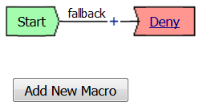 |
| Start | Every access profile contains a start. | 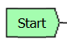 |
| Branch | A branch connects an action to another action or to an ending. | 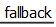 |
| Add an action | Clicking this icon causes a screen to open with available actions for selection. | 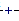 |
| Action | Clicking the name of an action, such as Logon Page, opens a screen with properties and rules for the action. Clicking the x deletes the action from the access policy. | 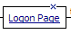 |
| Action that requires some configuration | The red asterisk indicates that some properties must be configured. Clicking the name opens a screen with properties for the action. | 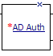 |
| Ending | Each branch has an ending: Allow or Deny. | 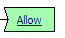 |
| Configure ending | Clicking the name of an ending opens a popup screen. | 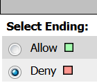 |
| Add a macro for use in the access policy | Opens a screen for macro template selection. After addition, the macro is available for configuration and for use as an action item. | 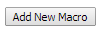 |
| Macro added for use | Added macros display under the access policy. Clicking the plus (+) sign expands the macro for configuration of the actions in it. | 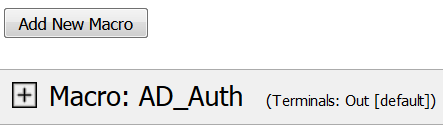 |
| Macrocall in an Access Policy | Clicking the Macrocall name expands the Macro in the area below the Access Policy. | 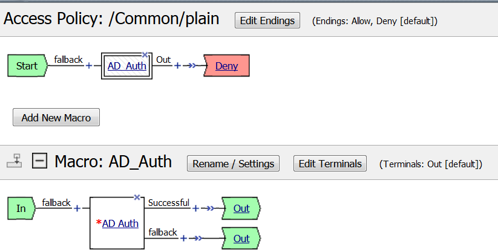 |
| Apply Access Policy | Clicking it commits changes. The visual policy editor displays this link when any changes remain uncommitted. | 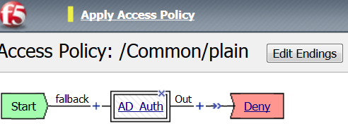 |
| Add Items Actions | The actions that are available on any given tab of the Add Item screen depend on the access profile type, such as LTM-APM (for web access) or SSL-VPN (for remote access), and so on. Only actions that are appropriate for the access profile type will display. | 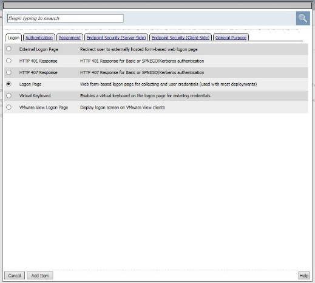 |
{kind=link}
{kind=link}
{kind=link}
{kind=link}
{kind=link}
{kind=link}
{kind=link}
{kind=link}
{kind=link}
{kind=link}
{kind=link}
{kind=link}
{kind=link}
Pausing the APM Policy Execution for Troubleshooting – The Message Box¶
Now that we have reviewed/refreshed our memory on VPE conventions lets edit our policy we were previously working on to add some more actions. This section we show a great tool for troubleshooting a policy that may have been reaching an ENDING DENY and closing the APM session too rapidly for proper inspection during the troubleshooting phase.
STEP 1
{kind=link}
- Navigate to Access Access Profiles Profiles/Policies -> Access Profiles (Per-Sessions Policies). Click Edit next to Agility-Lab-Access-Profile to open the Visual Policy Editor (VPE).
{kind=link}
- After the Logon Page object, on the fallback branch, click the + symbol to open the Actions window.
{kind=link}
- Click on the General Purpose tab and then click the radio button next to Message Box and click the ADD ITEM button at the bottom of the page.
{kind=link}
- Click the SAVE button on the next window
{kind=link}
- Now client the ending Deny.
{kind=link}
- In the pop-up window change it to Allow and click the SAVE button.
{kind=link}
- Then click the Apply Access Policy link at the top left.
TEST 1

- Return to the browser or tab you are using for access to https://10.128.10.100. Restart a new session if necessary.
- Username: student
- Password: password
{kind=link}
- Did we receive an error this time after the logon page?
- Did the Message Box display?
{kind=link}
- Keep the message box display there and move to the other browser to review the Manage Sessions menu.
- Does the Manage Sessions menu show the Username this time?
- Is the Status showing a Blue Square or Green Circle? Why?
{kind=link}
- Click the session ID to review the details for any new messages.
- If things worked correctly you should see a message in the details stating, “Session deleted due to user inactivity or errors”
{kind=link}
- If you look back at the other browser window you should notice a Session Expired/Timeout message is being displayed.
STEP 2
- Navigate back to Access Profiles/Policies Access Profiles (Per-Session Policies). Click on Agility-Lab-Access-Profile
{kind=link}
- Access Policy Timeout from 30 seconds back to 300 seconds by removing the check from the custom column.
- Click the UPDATE button at the bottom of the page.
{kind=link}
- Click Apply Access Policy link at the top left of the page.
{kind=link}
- Finalize the update by confirming the box is checked next to the profile and clicking APPLY ACESS POLICY
TEST 2
- Now go back and restart the user session and logon.
- Do NOT click the message box link “Click here to continue”
- Leave the message box message displayed for the time.
{kind=link}
- Go to the other browser/tab and open the Manage Sessions menu.
- Your session should be there but the Status icon should still be a Blue Square.
- Click on your Session ID
{kind=link}
- Click Built-in Reports
{kind=link}
- Click on All Sessions report, then choose Run Report on the pop-up menu.
{kind=link}
- Click the Session Variables for your current session.
{kind=link}
- Do you now have Session Variables being displayed for this session? If so why?
{kind=link}
- Click the All Sessions tab and look at the column labeled Active. Does it show a Y or N in the column?
Note that session variables will only be displayed for Active sessions. Since you placed a message box in the VPE to pause policy execution the session is seen as active. This provides you the ability to now review Session Variables that APM has collected up to this point in the policies execution.
- Now in the user browser click the link in the Message Box.
If it timed out then restart and this time click through the message box link.
{kind=link}
- Now review the Active Sessions menu and note what icon is shown in the status column. Green Circle finally? Success!!
{kind=link}
- If you now click the Session ID you will see that the Policy has reached an ending Allow thus the Access Policy Result is now showing we have been granted LTM+APM_Mode access.
{kind=link}
- Now open the All Sessions report once more to review the Session Variables collected.
{kind=link}
- Click the logon folder in the Session Variables page that opens for your session.
{kind=link}
- Click the folder icon named last to expand its contents.
Notice on the left column labeled Variable Name above and to the right the next column is Variable Value and the third column is Variable ID. If you look at the Variable Name of username you will see to the right its value is recorded as student as you entered it in the logon page. The next column displays APM’s matching session Variable ID for this information. You will see that the naming convention follows the session hierarchy starting with session. then the first folder logon. then the next folder last. then finally the Variable Name of Username.
We will use some session variables in the next lab to GET and SET information for the users session.
Session Variables – Setting and Retrieving (Some Quick Information)¶
This section will provide some guidance on how to both retrieve and set session variables within a policy for a user’s session. Session Variables are very useful in many areas of policy execution. They can be used to assist in areas like authentication or single sign-on or assigning resource items for users based on information APM can collect from the backend AAA server and its associated directory.
Currently cached session Variables are available in APM Reports for review by an administrator. Additional available variables can always be found in the APM Configuration Guides. What is really nice is that APM is not limited to only having awareness of Session Variable it collects from the user session establishment or from the AAA server, administrators can actually create or set their own custom session variables for use within a policy. This means that an administrator could create new session variables via the VPE’s Variable Assign action or session variables could even be set from an iRule attached to a virtual server. This means that information that the LTM VIP can see or be gathered via an iRule could then be set as a session variable that could then be retrieved and used within the VPE.
About Session Variable Names¶
The name of a session variable consists of multiple hierarchical nodes that are separated by periods (.):
{kind=link}
Session Variable Reference¶
APM Session Variable references are provided in APM documentation. Current release information can be found at the following link: https://support.f5.com/kb/en-us/products/big-ip_apm/manuals/product/apm-visual-policy-editor-13-0-0/5.html
Partial Session Variable list
{kind=link}
Session Variable Categorization¶
While these are not formal categories, Session Variables fall under three general categories:
| Category | Examples |
|---|---|
| Variables returned by Access Policy actions |
|
| Special purpose user variables |
|
| Network access resource variables and attributes |
|
Active Session Variables¶
Below is a short breakdown of information gathered and cached during an Active session. Additional information can be gathered from the results of End Point checks when they are put into a policy. These would display as folders like check_av or check_fw if the actions were added to the policy
{kind=link}
Session Variable Manipulation via TCL¶
Variables can be parsed, modified, manipulated, etc using TCL. Although the tables below are not an exhaustive reference for writing and using TCL expressions, it includes some common operators and syntax rules.
Standard Operators
You can use TCL standard operators with most BIG-IP® Access Policy Manager® rules. You can find a full list of these operators in the TCL online manual, at http://www.tcl.tk/man/tcl8.5/TclCmd/expr.htm. Standard operators include:
| Operator | Description |
|---|---|
| - + ~ ! | Unary minus, unary plus, bit-wise NOT, logical NOT. None of these operators may be applied to string operands, and bit-wise NOT may be applied only to integers. |
| ** | Exponentiation. Valid for any numeric operands. |
| * / % | Multiply, divide, remainder. None of these operators may be applied to string operands, and remainder may be applied only to integers. The remainder will always have the same sign as the divisor and an absolute value smaller than the divisor. |
| + - | Add and subtract. Valid for any numeric operands. |
| << >> | Left and right shift. Valid for integer operands only. A right shift always propagates the sign bit. |
| < > <= >= | |
| Boolean less than, greater than, less than or equal to, and greater than or equal to. Each operator produces 1 if the condition is true, 0 otherwise. These operators may be applied to strings as well as numeric operands, in which case string comparison is used. | |
| == != | Boolean equal to and not equal to. Each operator produces a zero/one result. Valid for all operand types. |
| eq ne | Boolean string equal to and string not equal to. Each operator produces a zero/one result. The operand types are interpreted only as strings. |
| in ni | List containment and negated list containment. Each operator produces a zero/one result and treats its first argument as a string and its second argument as a Tcl list. The in operator indicates whether the first argument is a member of the second argument list; the ni operator inverts the sense of the result. |
| & | Bit-wise AND. Valid for integer operands only. |
| ^ | Bit-wise exclusive OR. Valid for integer operands only. |
| | | Bit-wise OR. Valid for integer operands only. |
| && | Logical AND. Produces a 1 result if both operands are non-zero, 0 otherwise. Valid for boolean and numeric (integers or floating-point) operands only. |
| || | Logical OR. Produces a 0 result if both operands are zero, 1 otherwise. Valid for boolean and numeric (integers or floating-point) operands only. |
| x?y:z | If-then-else, as in C. If x evaluates to non-zero, then the result is the value of y. Otherwise the result is the value of z. The x operand must have a boolean or numeric value. |
Standard Operators
A rule operator compares two operands in an expression. In addition to using the TCL standard operators, you can use the operators listed below.
| Operator | Description |
|---|---|
| contains | Tests if one string contains another string. |
| ends_with | Tests if one string ends with another string |
| equals | Tests if one string equals another string |
| matches | Tests if one string matches another string |
| matches_regex | Tests if one string matches a regular expression |
| starts_with | Tests if one string starts_with another string |
| switch | Evaluates one of several scripts, depending on a given value |
Logical Operators
Logical operators are used to compare two values.
| Operator | Description |
|---|---|
| and | Performs a logical and comparison between two values |
| not | Performs a logical not action on a value |
| or | Performs a logical or comparison between two values |
Getting/Setting Session Variables¶
During the pre-logon sequence, using the Visual Policy Editor (VPE) you can get and set Session Variables. The following are some quick examples.
To set/modify a variable: Variable Assign action
- To get a value the last username entered by a user, use expr or return:expr { [mcget {session.logon.last.username}]}
expr evaluates an expression, whereas return simply returns the result. For example, we have a two custom variables:
- session.custom.value1 = 3
- session.custom.value2 = 4
Using expr we can construct the following expression, this would return a value of 7 (i.e. the evaluation of 3+4):
expr { “[mcget session.custom.value1] + [mcget session.custom.value2]” }.
Using return we can construct the following expression, this would return simply “3+4” as shown.
return { “[mcget session.custom.value1] + [mcget session.custom.value2]” }
Set Secure Variables¶
You can also set Secure Variables. The value of a secure session variable is stored as encrypted in the session db. The value is not displayed as part of session report in UI, nor is it logged as part of logging agent. Secure variables require the -secure flag, both for mcget and access::session data get/set.
{kind=link}
Review these two examples below. The first is a Variable Assign action that is SETTING the Session Variable ID of “session.logon.last.upn” with the information extracted from an x509 Client Certificate that was presented by the user’s computer/browser upon connection to the VIP.
{kind=link}
The second example show a message box displaying a Session Variable value by calling out the Session Variable ID in the Message Box for the user to see.
{kind=link}
Session Variable Exercise¶
The following are some exercises to demonstrate how session variables can be utilized.
STEP 1
{kind=link}
- Open the APM VPE for the Agility-Lab-Access-Profile Access Policy we have been working with.
{kind=link}
- Edit the Message Box in the VPE.
{kind=link}
- In the Message text box enter: My username is: %{session.logon.last.username} Then click the Save button
- Then click Apply Access Policy
TEST 1
- Now logon with the “student” username to the test site.
{kind=link}
- When the message box appears, you should see a message stating, “My username is: student”. Was it successful?
STEP 2
{kind=link}
- Go back into the VPE
{kind=link}
{kind=link}
- Add a Variable Assign action from the Assignment action tab and place it before the Message Box action.
{kind=link}
- When the properties screen opens, click the Add New Entry button.
{kind=link}
- Then click the “Change” link.
{kind=link}
- A window will pop up with Custom Variable on the left and Custom Expression on the right.
You will notice both boxes are currently empty.
{kind=link}
- Often you may forget how to start off with the variable name or the expression so a trick you can use to get you started is first select a pre-defined variable on the left side and a AAA attribute on the right side and then reselect custom variable and custom expression. This will populate each box with example data that you can now edit.
*This is not a required step, just a tip!*
{kind=link}
- On the Custom Variable side type: session.custom.mynewvar (Be sure to make it lowercase). On the Custom Expression side type: mcget {session.user.clientip} (There is a space between mcget and the { bracket)
- Click the Finished button.
{kind=link}
- Click the Save button.
{kind=link}
- Click on the Message Box.
{kind=link}
- After the closing } bracket in the first line of the message section add a space and then type <br>
- Then on the next line type, My Client IP is: %{session.custom.mynewvar}
- Then click the Save button.
{kind=link}
- Then click Apply Access Policy.
TEST 2
- Now logon to the test site as a user again and review the message box text.
{kind=link}
- Does it display your client IP address?
{kind=link}
- Now run the All Sessions Report and review the View Session Variables for the active SessionID. (Access Overview Access Reports)
- Notice the folder icon named custom and the corresponding Variable ID of session.custom. This was generated automatically during the Variable Assign action that you added to the policy. When you set the Custom Variable to session.custom.mynewvar APM used the next word after the session as the new container (custom) for variable (mynewvar).
{kind=link}
- If you expand custom folder you will notice a new Variable named mynewvar and in the next column you will see your client ip address and in the third column the variable id of session.custom.mynewvar
As you can see this could be expanded upon to be very useful. For example, maybe you are enabling two-factor authentication for both Active Directory and RSA Secure ID. Well the AAA server authentication Action objects expect to see a specific session variable name sent to them for so that they can correctly parse that data and verify against the AAA server. As an example both the AD Auth and the RSA Auth expect to see session.logon.last.password as the variable used to hold the password value. However, if you create a logon page with three input fields, one for username, a second for AD password and the third for the RSA Token/PIN then they must each have their own unique post and session variable name as they are configured in the Logon Page object.
This means that as the third variable for the RSA toke/pin is passed to APM no longer as session.logon.last.password because the AD Password field was already set to use that variable on the logon page. What do we do now?
Variable Assign to the rescue, take a look at this below example to fix this problem as it mimics what we just accomplished with the session.custom.mynewvar exercise. Consider the following screen shots.
{kind=link}